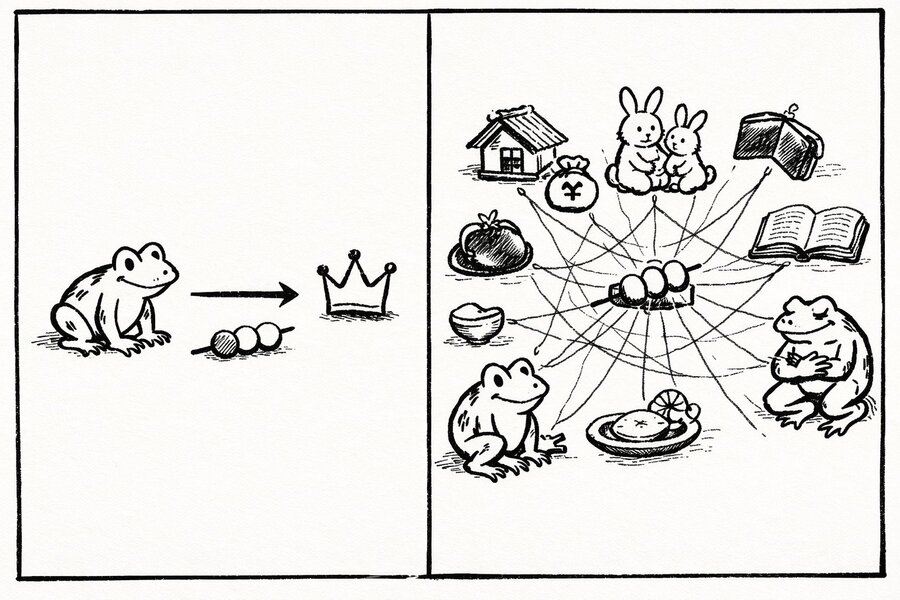

行動心理学
4歳の子どもが15分間マシュマロを我慢できるかどうかで、人生の成功が予測できる——半世紀近く信じられてきたその物語が、いま静かに書き換えられている。
ミシェルらがスタンフォード大ビング付属幼稚園で満足遅延実験を論文発表
同年の世界：ニクソン大統領が米中国交に向け北京訪問。ミュンヘン五輪で選手11人が犠牲に。Atariが『Pong』をリリースし、ビデオゲーム産業が始まる。
注記：元実験の被験者はスタンフォード大学関係者の子弟のみ。2018年の追試（N=900超）で結論の大幅な修正が行われている。
子どものころ、親に「これを今日我慢したら、明日もっといいものを買ってあげる」と言われた経験はないだろうか。そのとき守ったか破ったかは、たいてい「意志の強さ」で語られた。我慢できた自分は偉い。できなかった自分はダメ。それは美しいほど単純な物語だ。
大人になっても構造は変わらない。ダイエット、貯蓄、禁煙——「今の欲望を抑えれば未来が良くなる」という信念は、成功哲学の土台になっている。私たちは「待てる人間」になりたがる。待てない人間を、どこかで見下している。
だがそもそも、「待てるかどうか」は本当に意志の問題だったのか。その答えを出したのは、マシュマロではなく、壊れたクレヨンだった。
この記事では、ある有名な心理実験の「物語」が書き換えられていく過程を追う。途中、あなた自身にも判断を求める場面がある。答えは一つではない。
1968年から1974年にかけて、スタンフォード大学の心理学者ウォルター・ミシェルWalter Mischel（1930–2018）オーストリア生まれの米心理学者。ナチス迫害から家族で逃れ渡米。スタンフォード大、コロンビア大で研究。2018年、がんにより死去。は、大学付属のビング幼稚園に通う4〜5歳の子どもたちを一人ずつ小さな部屋に連れていった。テーブルの上にはマシュマロが1個。研究者は子どもにこう言った——「今食べてもいい。でも、私が戻ってくるまで待てたら、もう1個あげる」。そして部屋を出た。制限時間は15分。
Fig. 1 — 甘くて、柔らかくて、目の前にあれば手を伸ばしたくなる。その誘惑をどう耐えるかが、実験の核心だった。
子どもたちの行動は多様だった。すぐに食べる子、匂いを嗅いでから齧る子。一方で待てた子たちは驚くほど創造的だった——椅子を揺らす、歌を歌う、指で遊ぶ。ある少女は自分で自分を落ち着かせるようにリラックスし、やがて眠ってしまったという。ミシェルが最初に知りたかったのは、子どもがどんな戦略で誘惑に耐えるかだった。この実験を有名にした「人生の成功との相関」は、もともと研究の目的ではなかった。
Fig. 2 — マシュマロ実験の基本構造
数年後、ミシェルの娘たちが思春期に差し掛かった。自分の友人たちがどうなっているかを娘たちから聞くうちに、ミシェルは元の被験者たちを追跡し始めた。すると驚くべき相関相関（Correlation）2つの変数が一緒に動く傾向。ただし相関は因果を意味しない。「待てた子がSATで高得点だった」は事実でも、「待てたからSATが高い」とは限らない。が浮かんだ。15分間待てた子どもたちは、十数年後、SATSAT（Scholastic Assessment Test）米国の大学進学適性試験。読解・数学の2科目で各800点、合計1600点満点。日本のセンター試験（現・共通テスト）に近い位置づけ。の得点が平均210点高く、ストレス耐性も高く、BMIも低く、薬物使用も少なかった。
この結果は心理学史上もっとも有名な物語の一つになった。自己制御こそが成功の鍵。マシュマロを我慢できる子は人生を我慢できる。TED TalkTED TalkTechnology, Entertainment, Designの略。各分野の専門家による短い講演を配信するプラットフォーム。マシュマロ実験は2009年のホアキン・デ・ポサダの講演で広く知られた。で紹介され、セサミストリートではクッキーモンスターが満足遅延を学ぶエピソードが制作された。ミシェル自身も2014年に一般向け書籍を出版し、自制心の技法を説いた。投資会社がマシュマロ実験を引用して老後の貯蓄を推奨するようにさえなった。
"The children who were willing to delay gratification and waited to receive the second marshmallow ended up having higher SAT scores, lower levels of substance abuse, lower likelihood of obesity, better responses to stress…"
「満足を遅延させ、2つ目のマシュマロを待てた子どもたちは、SATの得点が高く、薬物使用が少なく、肥満になりにくく、ストレスへの反応も良好だった…」
— 追跡研究の要約として広く流布した記述
ただし、この物語にはいくつかの前提条件があった。元の実験の被験者はスタンフォード大学付属幼稚園の園児だけだ。保護者は大学の教職員や関係者。つまり経済的に安定した、教育水準の高い家庭の子どもたちに限定されていた。追跡調査の回答者は約550人中185人程度で、さらに実験条件ごとにグループが分かれるため、各条件のサンプルはごく小さかった。ミシェル自身も、この集団が代表的でないことは認識していた。
誤解あるある
よくある誤解
マシュマロを我慢できた子は「意志が強い」から、将来成功する
実際は
2018年の追試で、家庭環境・経済背景を統計的に調整すると、待てた時間と将来の成果の相関は3分の2に縮小した
よくある誤解
自制心を鍛えれば子どもの将来は改善される
実際は
自制心だけを教えても、信頼できない環境にいる子どもにとっては「騙されやすくなる」だけかもしれない
よくある誤解
元の実験結果は再現された
実際は
2018年の追試では効果量は元の半分以下。2020年・2024年の研究では予測力がほぼ消失している
2018年、タイラー・ワッツらがこの実験を再検討した——その論点を追体験してみよう。以下は2つの異なるシナリオだ。同じ「マシュマロ実験」を、異なる状況で受ける子どもについて考えてほしい。
アキラは4歳。両親は大学教員で、家庭は安定している。「約束したら守る」が家のルール。先週も「明日アイスを買ってあげる」と言われ、翌日ちゃんと買ってもらえた。今、実験室でマシュマロが1個目の前にある。研究者は「戻ってきたらもう1個あげる」と言って出ていった。
アキラは15分間待てると思うか？
次のシナリオへ
あなたの回答を記録した。もう一つのシナリオを見てほしい。
ユイは4歳。母子家庭で、母親はダブルワーク。「週末に公園に行こう」と約束されることがあるが、仕事が入って行けなくなることも多い。先月は「新しいクレヨンを買ってくる」と言われたが、結局届かなかった。今、実験室で同じマシュマロが目の前にある。研究者は同じことを言って出ていった。
ユイは15分間待てると思うか？
二人の違いについて
あなたがどう答えたとしても、一つの問いが浮かぶはずだ。ユイがマシュマロを食べたとして、それは「意志が弱い」からか、それとも「約束が守られる保証がない」からか？ この問いこそが、2013年のロチェスター大学の実験と、2018年の追試が突きつけたものだ。
二人の子どもの違いは「意志力」ではなかった。違いは、「大人の約束を信じる理由があるかどうか」だった。2013年、ロチェスター大学のセレステ・キッドCeleste Kiddロチェスター大学（当時）の認知科学者。ホームレスシェルターで子どもを観察した経験が、マシュマロ実験の再検討を着想するきっかけになった。らは、マシュマロ実験の前に「約束を守る大人」と「約束を破る大人」を子どもに体験させた。約束を破られた子どもは平均3分2秒しか待たなかった。約束が守られた子どもは平均12分2秒待った。同じ子ども、同じマシュマロ。変わったのは環境への信頼だけだ。
Fig. 3 — 環境の信頼性が待ち時間に与えた影響（Kidd, Palmeri & Aslin, 2013）
キッドらの実験が示したのは、子どもが「馬鹿だから食べた」のでも「意志が弱いから食べた」のでもないということだ。約束が守られない環境で育った子どもにとって、目の前の確実な報酬を取ることは、むしろ合理的な選択だった。不確実な未来の2個より、確実な今の1個。それは短絡的な行動ではなく、環境に適応した意思決定だ。
2013年 — 信頼の実験（ロチェスター大学）
Kidd, Palmeri & Aslin
キッドはホームレスシェルターで子どもを観察した経験から着想を得た。シェルターでは持ち物が盗まれるのが日常で、大人が約束を守る保証はない。「この子たちがマシュマロ実験を受けたら、すぐ食べるだろう」——その直感を実験にした。結果、約束を破られた群は平均3分で食べたのに対し、守られた群は平均12分待った。同じ子ども、同じマシュマロ。変えたのは環境だけだ。
2018年 — 大規模追試（ニューヨーク大学）
Watts, Duncan & Quan
ワッツらは900人以上の多様な背景を持つ子どもを対象に、ミシェルの追跡研究を再現した。結果、待てた時間と15歳時点の学力の相関は元の研究の半分以下。さらに家庭環境・初期の認知能力を統計的に調整すると、相関は3分の2が消えた。行動上の問題との関連はほとんど統計的に有意でなかった。「マシュマロで人生が予測できる」は、サンプルの偏りが生んだ幻だった可能性が高い。
2020–2024年 — 予測力のほぼ消失
複数の独立研究チーム
2020年のカリフォルニア大学の研究では「評判管理」——つまり大人に良い子だと思われたいという動機——が実験結果に影響していることが示された。2024年の研究はワッツらのアプローチを拡張し、マシュマロ実験のパフォーマンスは成人後の機能を安定的に予測しないと結論づけた。ミシェル自身も最晩年にこの追試の仮説策定に参加し、自らの初期の結論に疑義を呈する仮説を事前登録している。彼は2018年にがんで亡くなり、結果を見届けることはなかった。
Fig. 4 — 背景要因を調整するごとに「自制心の効果」は縮小した
1968–1974
ビング幼稚園での実験開始
ミシェルが約550人の園児を対象に満足遅延実験を実施。当初の関心は「子どもがどんな戦略で誘惑に耐えるか」だった。
1988–1990
追跡研究の発表
待てた子どもほどSAT得点が高く、社会的スキルも高いとする相関が発表される。マシュマロ実験が「人生の成功を予測する実験」として有名になる。
2006–2011
脳画像研究との接続
fMRIを用いた研究で、満足遅延に関わる前頭前野の活動が確認される。「自制心には脳の基盤がある」という解釈が強化された。
2013
キッドの信頼実験
ロチェスター大学のキッドらが「信頼できない大人」条件を導入。環境の信頼性が待ち時間を劇的に変えることを示す。
2014
ミシェルの一般書出版
『The Marshmallow Test: Mastering Self-Control』刊行。セサミストリートとの連携も始まり、自制心教育の流れが加速。
2018
ワッツらの大規模追試
NYUのワッツらが900人超の多様なサンプルで再検証。効果量は元の半分以下、背景調整後は3分の2が消失。同年、ミシェル死去。
2020–2024
予測力のほぼ消失
「評判管理」効果の発見（2020年）。ミシェル自身が関与した事前登録追試の完了と、成人後の予測力がほぼないとする結論（2024年）。
マシュマロ実験の本当の教訓は、「自制心は大事だ」ではない。人は因果関係が単純で、個人の努力に帰属できる物語を好むということだ。「待てる子は成功する」は美しい。原因は子どもの中にあり、解決策も個人の訓練で済む。社会構造を変える必要がない。だから広まった。
"Focusing only on teaching young children to delay gratification is unlikely to make much of a difference."
— Tyler W. Watts, 2018
しかし現実はもっと複雑だった。子どもがマシュマロを食べるかどうかには、家庭の経済状況、大人への信頼、認知能力、そしてその日の空腹具合まで、無数の変数が絡んでいた。ミシェルの元研究がそれを見落としたわけではない——スタンフォード大関係者の子どもだけを対象にした時点で、それらの変数がほぼ均一になってしまっていたのだ。
そしてこの物語の変遷自体が、もう一つの認知バイアスを照らし出す。私たちが確証バイアスの記事で扱った問題——一度信じた物語に合う証拠ばかりを集め、合わない証拠を軽視する傾向。マシュマロ実験の「成功する子はこうだ」という物語は、半世紀にわたって教育政策と育児論を方向づけた。その間、サンプルの偏りや信頼の問題を指摘する声は、大きな物語の陰に隠れていた。
セサミストリート — クッキーモンスターの自制心エピソード（2013〜）
ミシェル自身がアドバイザーとして参加。クッキーモンスターがクッキーを我慢して「クッキー鑑定倶楽部」に入会するシリーズ。マシュマロ実験の「自制心は鍛えられる」という面を教育コンテンツにしたもの。
TED Talk「マシュマロを食べるな！」（2009）
講演者のホアキン・デ・ポサダが実験を紹介し、満足遅延と成功の関連を説いた。700万回以上再生。追試以前の「美しい物語」が最も広く伝わった形。
『The Marshmallow Test: Mastering Self-Control』（2014）
ミシェル自身による一般書。自制心の技法を説く内容だが、信頼と環境の問題にも触れている。出版の4年後に本人が亡くなり、追試の結論は見届けられなかった。

Fig. 5 — 左：一つの誘惑から一本の矢印が成功へ伸びる。右：家、信頼、経済、教育、空腹……無数の要因が絡み合う因果の網。
科学の自己修正機能は、ゆっくりだが確実に働いた。ミシェルは晩年、自らの結論に疑義を呈する追試の仮説を事前登録した。名声を築いた研究の修正に自ら参加する——科学者としてはこれ以上ない誠実さだと私は思う。だが「マシュマロを我慢できる子は成功する」という物語の方が、「環境と信頼と経済状況が複雑に絡み合っている」という結論よりもはるかに流通しやすい。それもまた、人間の認知の特性だ。
Cognitive and Attentional Mechanisms in Delay of Gratification
一般に「マシュマロ実験」として知られる論文。認知的戦略が遅延を助けるかを検証した。被験者はスタンフォード大ビング幼稚園の園児56人。
環境の信頼性がマシュマロの待ち時間に与える影響を実証した研究。約束を破る条件と守る条件で、待ち時間に約4倍の差が生じた。
900人超の多様なサンプルによる追試。効果量は元の半分以下で、家庭背景を調整すると大部分が消失した。マシュマロ実験の結論を根本から揺さぶった論文。
The Marshmallow Test: Mastering Self-Control
ミシェル自身による一般向け書籍。実験の歴史と自制心の訓練法を解説。信頼と環境の影響にも触れているが、「自制心は鍛えられる」が主軸。